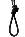

¿Qué es FAQ?
- Es el término utilizado para denotar una sección de Preguntas Más Frecuentes (Frequently Asked Questions, FAQ).
¿Qué es CAPO?
- Es la línea de investigación de "Computación de Altas Prestaciones y Optimización" del grupo de investigación GAVAB..
¿Qué es ?
- La horca fue el logotipo que adoptamos un conjunto de profesores, en el que me incluyo, para describir la situación de acoso laboral que sufrimos en el antiguo Departamento de Lenguajes y Sistemas Informáticos de la URJC.
- Los hechos tuvieron lugar entre los cursos 2004/05 y 2005/06 pero se agravaron a finales de junio de 2006, cuando se procedió a la no renovación sin ninguna justificación académica de 5 profesores del grupo de investigación GAVAB (ver aquí).
- Se puede encontrar más información de las causas, agravios, consecuencias y finalización de los acontecimientos en http://acosourjc.blogspot.com/.
¿Qué es la Visión Artificial?
- Es una disciplina que tiene como finalidad la extracción e interpretación automática de información del mundo físico a partir de imágenes.
- Es un área multidisciplinar que pretende, en cierta medida, reproducir artificialmente el sentido de la vista mediante el procesamiento y la interpretación de imágenes utilizando las prestaciones de los ordenadores.
¿Qué es el Optófono?
- Es el sistema capaz de reproducir un sonido estructurado a partir de los niveles de intensidad de una imagen.
¿Qué es GPGPU?
- Son las siglas de General Purpose on Graphic Processing Units.
- Es un término utilizado por el Ph.D. Mark Harris para hablar de programación genérica sobre procesadores gráficos.
¿Qué es la Biometría?
- Aplicación de técnicas matemáticas y estadísticas a las ciencias de los seres vivos (medicina, biología,...).
¿Qué es la Biometría Informática?
- Aplicación de técnicas biométricas a la autentificación e identificación automática de personas en sistemas de seguridad informática.
¿Qué es OpenGL?
- Es un interfaz multiplataforma de acceso al hardware gráfico y una librería de renderizado 3D
|